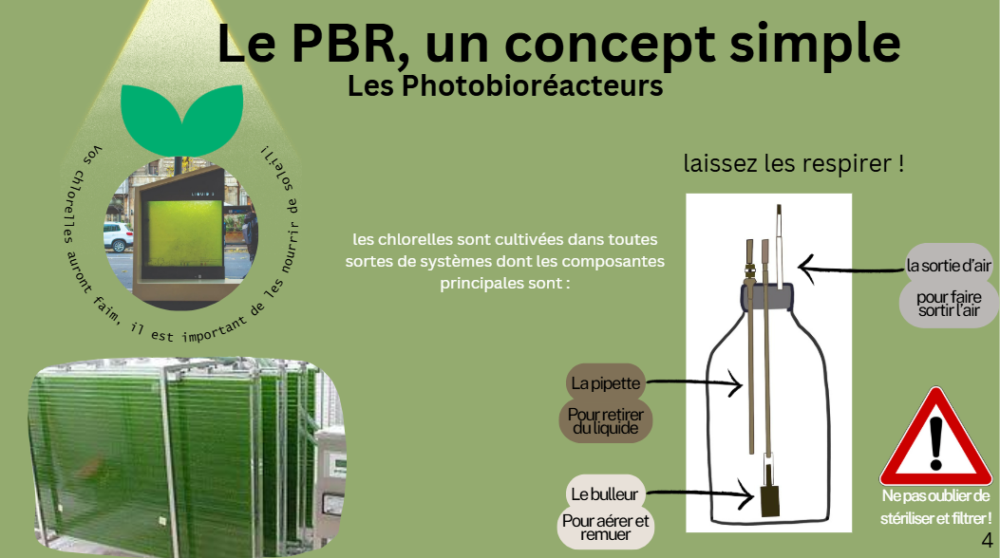
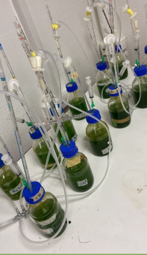
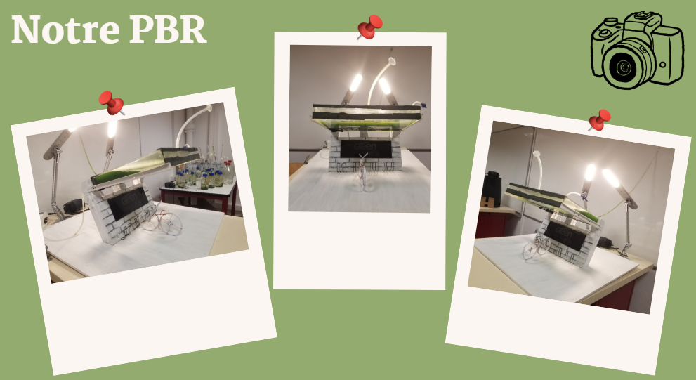
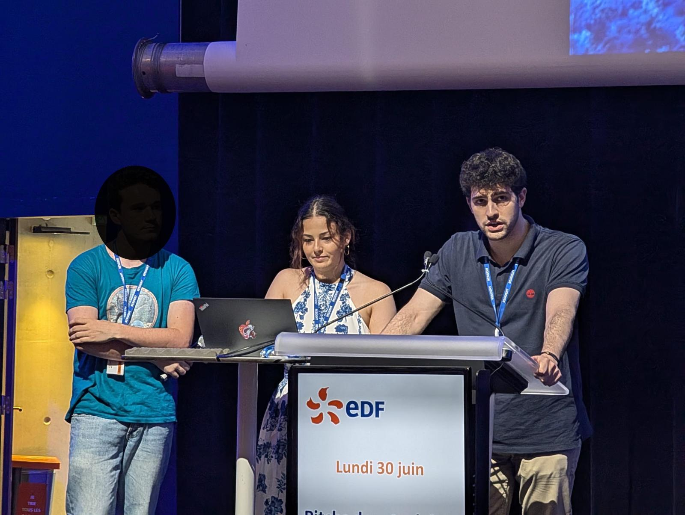
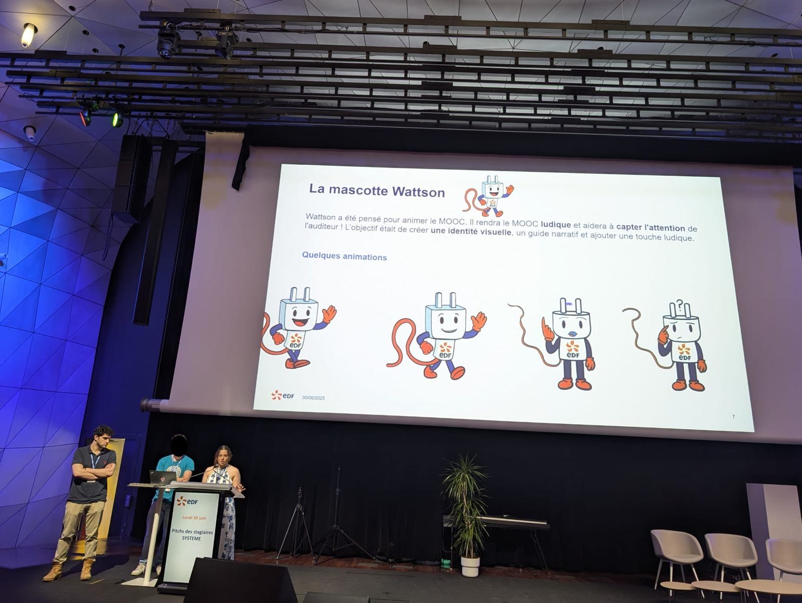

Introduction
Recontextualisation environnementale : pourquoi les microalgues sont une piste intéressante, et comment les PBR permettent de structurer une culture contrôlée.
L’année dernière, j’ai concrétisé un objectif important : obtenir mon diplôme de Licence Sciences et Technologies à l’Université Paris-Saclay, au sein de l’Institut Villebon – Georges Charpak.
Cette formation m’a apporté bien plus que des connaissances théoriques. À travers les stages et les nombreux projets de groupe, j’ai développé des compétences concrètes, appris à travailler en équipe et fait de belles rencontres — enseignants comme camarades — qui m’ont soutenue et fait grandir.
Au fil de mon parcours, j’ai compris que si la rigueur scientifique me plaît, ce sont surtout les projets, les enjeux, l’organisation et la collaboration qui me stimulent le plus.
Pour appuyer ma candidature, j’ai choisi de présenter ici les expériences qui ont marqué mon cursus. J’espère que cette immersion dans mon parcours vous plaira.
Découvrir mes projets ↓
Objectif : optimiser la production de microalgues (chlorelles) afin d’augmenter la synthèse de lipides, tout en réfléchissant à un dispositif intégrable en milieu urbain.
Recontextualisation environnementale : pourquoi les microalgues sont une piste intéressante, et comment les PBR permettent de structurer une culture contrôlée.

Comprendre les éléments clés : lumière, aération, prélèvements, stérilité. Ce schéma nous a servi de base pour la conception du prototype.

Mise en place d’un plan d’expérience combinant plusieurs niveaux de lumière et d’azote, afin d’observer l’évolution de la culture et identifier les conditions favorables.

Installation du dispositif et organisation des échantillons. Cette étape a été essentielle pour assurer reproductibilité et cohérence des mesures.


Premiers choix de design et contraintes : brassage, sédimentation, diffusion de lumière, faisabilité du montage et maintenance.

Ajustements : bulleur plus simple, renforts mécaniques, optimisation de l’assemblage et réduction des points de faiblesse (fuites, surpression…).

Bilan des composants nécessaires au prototype : matériaux, éléments d’aération, connectiques et estimation du coût global.

Présentation du PBR final : structure, circulation, points clés, et ce que cette version améliore par rapport aux premières itérations.
Création d’un logo simple et cohérent avec l’objectif du projet, pour renforcer la lisibilité et la présentation finale.

Ici tu pourras écrire l’interprétation : tendance globale, impact des conditions, observations clés et limites (si besoin).

Tu peux détailler : lecture du graphe, conclusion quantitative, et ce que ça implique pour la conception du PBR.

Résumer : ce que montre la masse, cohérence avec concentration, et pistes d’amélioration pour augmenter le rendement.
Contexte :
Durée :
Objectif :
Mon rôle :
Méthodologie / Outils :
Résultats / Impact :
Supports :
Contexte : Conception d’un MOOC sur les réseaux électriques alliant vulgarisation et rigueur scientifique.
Durée : 11 semaines.
Missions principales : Réalisation et animation de vidéos pédagogiques, intégration d’outils d’intelligence artificielle.
Mon rôle : Concevoir les animations et les vidéos de la formation vulgarisée.
Méthodologie :
Outils : Procreate, IA interne à EDF, logiciel de montage.
Résultats : Nous n’avons pas pu finaliser l’intégralité du MOOC car la durée du stage était trop courte. Nous avons amorcé le projet et livré une trame complète à l’équipe qui reprendra la suite : animations, scripts, vidéos, quiz, ainsi qu’un descriptif de l’idée finale. Nous avons également présenté nos avancées devant l’ensemble des stagiaires EDF et leurs tuteurs dans un auditorium.



Mascotte pédagogique interactive intégrée au MOOC pour dynamiser l’apprentissage et maintenir l’attention.
(Tu peux compléter : à quel moment Wattson intervient, ce qu’il explique, etc.)
Durée :
Responsabilités :
Compétences développées :
Situations marquantes :